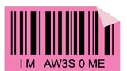

I'm a Computer Science student passionate about data science, AI, and leveraging technology to solve meaningful problems. I enjoy uncovering insights from data and building cool stuff, driven by a strong interest in data structures and algorithms.
I love seeing how AI is transforming industries and reshaping the way people live and work, which motivates me to continuously learn, explore new technologies, and contribute to meaningful innovation.
An interactive data-story site analyzing literacy and education access disparities across Malaysian states — choropleth maps and linked filters (dropdown, slider) let readers explore school density, enrolment, and completion rates by state and year. Synthesized Kaggle and OpenDOSM data to surface a gender and urban–rural "learning divide" despite 95% national literacy.
Cleaned and combined internet-usage and social-media datasets from Our World in Data and Kaggle into an interactive Tableau dashboard comparing internet penetration across Southeast Asia and global markets — revealing Malaysia leads the SEA region at nearly 97% internet penetration.
Cleaned and preprocessed a student dataset (missing-value treatment, feature scaling), then trained and compared SVM, Decision Tree, and Random Forest classifiers for multi-class grade prediction — reaching up to 75% accuracy with an RBF-kernel SVM. EDA identified study time and absenteeism as the strongest predictors of academic risk.
Designed a full conceptual ERD (Crow's Foot notation) for a waste-collection business, modelling entities, relationships, and cardinality from a real-world case study. Built a logical data model in Oracle Data Modeler and generated a working SQL schema with constraints, check clauses, and documented business rules — version-controlled with Git.
I'm always up for a good convo — data, AI, or whatever cool thing you're building. I'm currently looking for an internship, so if that sounds like a fit, reach out and let's connect!